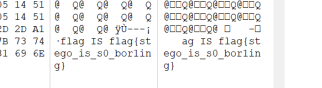
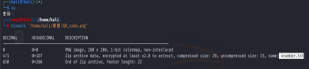
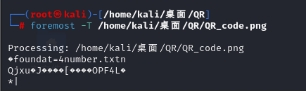
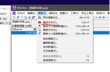
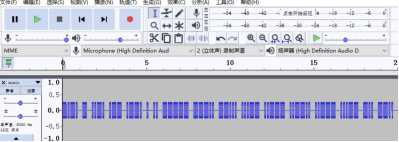

[TOC]
作者先前入门CTF周报回忆录，有部分题目缺失，希望此WP能帮助到你。
2024.9-10
西电-moectf2024
MISC
signin:在看了题目背景后起初并无思路，我通过看右边注释安装了“WSRX国内镜像”，启动了在线环境，发现下方出现wsxl，点击复制后，将其粘贴在WSRX国内镜像（如图1），发现它给我转出了一个类似IP地址的号码（如图2），根据题意再将它通过搜索引擎搜索出一个考勤页面，最后依题完成任务得出flag。这题主要重在审题，难度于我不大罗小黑战记：第一次看到是一个表情包，发现它会很短时间跳出一张二维码，我手机扫不到，但我知道我需要将这段动画过程变慢或者暂停，然后通过WSDN提示，得知misc部分工具的功能。我使用puzzlesolve的imagetool功能将小黑分解（如图3），得出了其中二维码。重在观察及工具的运用，难度于我不大*杂项入门指北：打开图片后观察右边的竖线有不同之处–摩斯密码，翻译即可。*Abnormallap:审题听歌头尾部分确实有卡顿，我开始在音频工具audacity分析这首mav格式的歌，我试着切换它的频谱图，观察发现全图头尾有不同之处（如图3），试着将其拉长得到（图4）一段字符，又根据题目提示moectf{[\da-f-]+}(通过chatgpt解读)阿拉伯数字+小写字母(a-f)以及连字符"-"，即可知道flag。本题重在观察和工具的使用。somany’m’:这题是让我最抓狂的一题，它没有二进制、十六进制的格式。它有@{}！这些base64、base32所没有的符号，这我只能在puzzlesolve上其它相关工具尝试，最后在frequencycount工具上测出频率排序得到所谓的答案（如图5），没曾想被坑了，再回题干看到题目提示“如果有某几个字符无法判断顺序请按字典序排序”，这才知道（如图6）出现排序问题，P和M倒过来才正确。本题重在观察乱码格式来排除可能，来减少自己寻找工具的麻烦，其次是细心。Find_it:审题+大西安+雄峰+高德地图+幼儿园。重在搜索。*ctfer2077-3：（流量分析）Wireshark和WinHex的配合使用依据我们可以初步得知这段所需流量和http协议有关，我们可以利用wireshark的流量分析功能进行提取，利用它的过滤，筛选出两段流量（如图7），可以发现第一条流量有”upload“，我就选取这段，右键它并选取tcp追踪流，然后提取到（图8），往下滑发现（图9）蓝色字体“secret_zip”初步确定这是个压缩包，我在（图10）发现了504B文件头——压缩包，接下来我通过搜索引擎得知“Hypeertext….”是个装有这段流量信息的地方（图11），右键导出分组字节流，另存成bin类型的文件，接下来将其移至winhex工具中查看其16进制，其中不难发现（图12）有504B的文件头在其中，而开头的是不需要的，所以删除504B前面的码。由之前的tcp追踪流（图13）可知，这后面的蓝色字体部分是响应内容，这是需要删除的，图9中画圈中可知那是红色内容的结束部分，通过这里找到文件尾，来到winhex中将响应内容16进制部分（图14）删去。最后将修改后文件保存为zip类型文件即可打开了。
大数据模型应用安全
Neuro：通过多次交流关注到“亲口说”、“Vedal：。。。”（如图1），进而从AI那套出flag。并非助手：并非助手：因为不能输入ASCIIPrintable所以直接输出旗帜后flag就出来了。不能出现flag英文就可以。
Evil?:让它把flag的一个一个字符说出来就可以。
Web
一、初步认识了爬虫协议——****/robots.txt二、学会通过用搜索引擎查看ctf题目的源代码、简单抓包(例如西电ctf的“弗拉格之地的挑战”
Pwn
一、初步会用浏览器搓脚本(如西电ctf的NotEnoughtime)然后应用到题目中
待做事项
一、看看sql注入和密码学原理的解题思路；找下御网杯ctf、西电ctf的wp周报和题；
二、pwn的部分题目需写代码，自己不熟悉python的脚本代码，因此后面需要更多地学习python语言及其脚本编写；
三、web和pwn题目有点难，做起来没有思路，参考别人的wp也不是很懂，接下来我应该多去学习这类题目的解法和知识点。
学习知识分享
kali虚拟机自带nc，所以有网址要用nc链接的话，主机不用下nc了；helloctf_os、kali虚拟机有很多解ctf的工具，所以建议大家直接下载helloctf_os、kali的虚拟机吧。
这是我攒了很久的ctf资源，大家可以看看，像文件头有必要记一记，以及”吾爱破解“这个网站有很多汉 化后的ctf工具。各类ctf网站的wp网址等等：
2024.11.4
Buuctf练习场
题目来自BBUCTF练习场：BUUCTF在线评测—以下题目是本人觉得有代表性的。
MISC
你竟然赶我走

这题给了个静态jpg图片，第一时间想到隐写，放到winhex里分析，在最后看到这个flag：
但这不是好方法，费时间去观察，我们可以直接将这张图片拉到随波逐流里帮我们分析：
最快得到flag。
二维码
看到二维码先扫一扫，然后放到CQR、随波逐流上分析，发现只看到sectet is here的英文，交上去是错的，事情不简单，这个是隐写，直接飞到kali上使用binwalk看看藏了什么：
藏了flag。
然后我就用刚学的foremost指令进行将这txt抽离：
抽离出加密压缩包，接着爆破就可以了。
大白
开局给了这个：
一开始是半身的，想到要恢复比例，可以用随波逐流，随波逐流这个工具可以检测图片原本尺寸并进行修复：进而得到flag。


wireshark
原题是“黑客通过wireshark抓到管理员登陆网站的一段流量包（管理员的密码即是答案) 注意：得到的 flag 请包上 flag{} 提交”
登录–login、post。
先说说post请求吧：是HTTP协议中的一种请求方法，它用于将客户端数据发送到服务器。在Web开发中，POST请求通常用于提交表单数据或上传文件。与GET请求不同，POST请求的数据不会出现在URL中，而是包含在请求体中，这使得POST请求可以发送更大量的数据，并且相对于GET请求来说，具有更高的隐私性。例如，一个发送JSON数据的POST请求可能如下所示：
|
|
其实有post请求出现也经常会伴随user、HTTP、api这些关键词。
接下回到题目，将流量包放入wireshark工具中分析，用http或者tcp过滤，去找有post请求的一段流量：


类似这样的流量分析还有“被嗅探的流量”。
zip伪加密
题目没有任何提示，ziperello破了半天没破成功，随波逐流分析上分析不出来，多半是伪加密了，重点来了！！！！:

第一个504B所在的行如果出现09多半是伪加密了，而我们只需要将第二个504B的09改成00就可以了。类似的还有“rar”。
LSB
kali的binwalk和foremost指令分离不出有用的东西，随波逐流分析不出，看到题目的LSB有特殊含义，去查了查得知这是lsb隐写，现在我们要用stegsolve工具进行分析：

进行数据分析后得出：

我们看到了有png在其中，将其导出为png形式的文件可知是个二维码。
隐藏的钥匙
和之前的隐写相比，这次的隐藏隐秘写，在winhex工具中分析16进制时，头和尾部未出现flag，这时我们可以用到winhex的搜索功能：
我也没想到有这功能，搜索出来的flag在ANSI ASCLII码的中前段，然后解码即可得到。
数据包中的线索
本题主要是识别base码，base64包含的元素有：小写字母a-z、大写字母A-Z、数字0-9、符号"+"、"/“一共64个字符的字符集。
假如给我三天光明

这张图片下方有”点“，查了下发现这是盲文，翻译过来是：“kmdonowg”，将其作为密码去解压提取附加的文件时得到一个wav，它听起来是摩斯密码，用audacity工具去分析音频最后得到flag：
2024.11.9
Buuctf-MISC、Crypto
MISC
神奇的二维码
base64多重编码：这个是题目

扫进去信息没用，放到010editor也无，那就是隐写了。用kali的binwalk和foremost指令去分离，果真有：

一个全是base64进制码的word文档，还有一个rar加密压缩包，起初想用随波逐流去解码的，没想到超字数了。只能用另外一个新工具：CyperChef。将密文复制到上面进行解码。

然后我发现这个是翻译密文的字数上限是比随波逐流工具要高的，而且这个密文还是多重加密，我翻译了快二十次才出结果。接着用这个密码打开rar加密包，发现里面的MP3是摩斯密码，将它拖到audacity进行分析就可以得到flag了。

荷兰宽带数据泄露

开局直接发我一个二进制bin文件，给随波逐流、010editor分析却没啥有效信息，根据题目所示，提及有关“数据”之类，这时我们需要用到一个工具：routerpassview
RouterPassView：大多数现代路由器允许您备份到一个文件路由器的配置，然后从文件中恢复配置时的需要。路由器的备份文件通常包含了像您的ISP的用户名重要数据/密码，路由器的登录密码，无线网络的关键。如果你失去了这些密码1 /钥匙，但你仍然有你的路由器配置的备份文件，RouterPassView可以帮助你从你的路由器恢复您丢失密码的文件。

用routerpassview的查找功能找像username、password、flag等关键词，一个个尝试提交看看。
Crypto
所需工具：随波逐流v6.3，RSAtools、(因式分解)yafu-x64
重点：需要记住凯撒密码、rabbit密码、栅栏密码，这三类是很难从外表辨别出的，放到随波逐流工具看看有没有flag
解密

将密文粘贴至随波逐流解码工具中，就可以得出flag，这个工具能将大部分密码格式罗列出来，如凯撒密码、base64、base32、栅栏密码等。
MD5加密
e00cf25ad42683b3df678c61f42c6bda
这个是md5加密形式，格式一般有字母和数字组成，最重要的是长度为32位，自己可以数数。。。
使用MD5解码工具得到：admin1，这就是flag。
URl加密
%66%6c%61%67%7b%61%6e%64%20%31%3d%31%7d
这个是url加密，用专门的解密工具就可以得到flag，如随波逐流，密文格式一般是两位字符串组成一组，再由%来隔开。
rot加密

密码在图上边，题目提示是回旋踢，意味着有”回转“，就是重新绕回，这就是rot加密，用工具解码，rot表回转，后面的数字表示偏移位数，比如说s，从s开始到i-j-k，就偏了3次，到z后又回到a，直至到f，刚好13，所以说Rot13解码就是真正的flag。
凯撒密码
afZ_r9VYfScOeO_UL^RWUc
这个就是凯撒密文了，这种我认为是最恶心的密文了，看不出规律，只能放在随波逐流上看有没有flag在里面，
凯撒密码的变化大致是把原文的字母移动一定的位数来实现加密或者解密，比如从A、D开始偏移三位，分别变成D、G了。

quoted-printable加密
=E9=82=A3=E4=BD=A0=E4=B9=9F=E5=BE=88=E6=A3=92=E5=93=A6
这类密文形式很明显，有等号、大写字母和数字，交给随波逐流吧。

栅栏加密
felhaagv{ewtehtehfilnakgw}
这个就很好看了，在网络空间安全导论课上有听到老师将这个栅栏加密，大致是：解密者需要掌握栅栏的排列顺序和每个栏的宽度，然后按照加密过程的逆序逐个提取出明文信息。 这种加密方式虽然较为简单，但具有较好的隐蔽性和可读性。 在一些特定场合下，例如军事或商业机密等需要保护敏感信息的场合，可以使用栅栏密码来确保信息的安全。

就13栏符合了。
Rabbit加密
U2FsdGVkX1/+ydnDPowGbjjJXhZxm2MP2AgI

这我找不出规律/。。。。只能记了。。
RSA加密
在一次RSA密钥对生成中，假设p=473398607161，q=4511491，e=17
求解出d作为flga提交。
这里需要用到RSAtools（不建议手算）

打开这个工具后可以看到，p、q都是素数，d是私钥，而题目给出了pq了，我们输进去就可以，注意这个e填到工具中的E空栏时，有个hex，需要我们把e=17变成16进制的“11”，接着按下calc：D生成私钥就可以，这就是flag了。

yafu因式分解与哈希加密
题目：密码学历史中，有两位知名的杰出人物，Alice和Bob。他们的爱情经过置换和轮加密也难以混淆，即使是没有身份认证也可以知根知底。就像在数学王国中的素数一样，孤傲又热情。下面是一个大整数:98554799767,请分解为两个素数，分解后，小的放前面，大的放后面，合成一个新的数字，进行md5的32位小写哈希，提交答案。 注意：得到的 flag 请包上 flag{} 提交
这里要分解素数可以用到yafu，下载好yafu-x64并设置好路径后，在桌面打开终端

按照题目排列好数字串101999966233后，

2024.11.16
西电-moectf2024
完成事项
解决f5隐写、磁盘文件的查看、解决txt零宽隐写、西电MOECTF
MISC
ctfer2077-2

这题给的文件有点特殊，电脑没识别出来，但我看了下属性，发现者货大小：4096KB——磁盘内存（2^12，你想想你手机设置里给的最大内存是不是和这有关，都是2的次方？），那就用Veracrypt去分析吧，

这文件果然被识别出来了，现在要密码？题目已经给了那个那啥社会主义的，用来翻译下? 是p@55w0rd
然后就此创了个A盘来去打开它，里面还有个txt问我flag在哪，显然还要找，

用NTFS隐藏数据流分析吧，这专门为磁盘分析准备的，

还真有，然后我就不会了，后面看了别人wp，发现这是双拼输入法打出来的，flag就是moectf{shuangpinshizheyangdachulaide}，太难了想不出这么诡异的输入法。
ez_F5

开局来一个图片，看到题目给的提示，找了下csdn，发现是个F5隐写，在网上下载好F5-stegraphy-master的工具文件包，用终端指令使用文件来解决隐写：
cmd
cd /d F:\Legion\xxxx\xxxx\F5-steganography-master
java Extract (图片绝对路径) -p （密码）
在这张图片的属性界面发现了有备注，那是个base32进制，翻译后得到：no——password的短语，可知这就是f5隐写密码了。

还真有，然后再f5隐写文件上的output.txt文本上找到了flag：moectf{F5_15_s0_lntere5t1n9}
小小套娃

给了个winrar7z压缩包，里面有张图片，放入随波逐流中，用binwalk、foremost分离出来，发现有一个txt，里面的开头8950，很明显是个png文件

内容是：you’ve got the zipkey:874jfy37yf37y7，那这个zip密码就是874jfy37yf37y7了，点入nnnext.zip文件发现，里面的next.7z和txt的密码都是874jfy37yf37y7，，而且这个txt内容：

有个符号很奇怪，查了查这是长度为零的字符，这不就是零宽隐写吗？用puzzlesolver解码得到：dhufhduh48589

然后用这个dhufhduh48589密码打开另外一个flag.7z文件，查看里面的txt，

去翻译下新佛曰吧。。。。。得到flag。
来总结下零宽隐写吧：也就是说txt出现零宽时，有可能看不见，也有可能看见两三个字粘在一个格子上，如：

零宽空格（zero-width space, ZWSP）用于可能需要换行处。
Unicode: U+200B HTML:零宽不连字 (zero-width non-joiner，ZWNJ)放在电子文本的两个字符之间，抑制本来会发生的连字，而是以这两个字符原本的字形来绘制；
Unicode: U+200C HTML:零宽连字（zero-width joiner，ZWJ）是一个控制字符，放在某些需要复杂排版语言（如阿拉伯语、印地语）的两个字符之间，使得这两个本不会发生连字的字符产生了连字效果。
2024.11.19
西电Newstars-ctf2024
MISC
week3 BGM坏了吗？
上来就给我个音频，我也是听了下，还是我喜欢的歌，听到最后莫名其妙有小小的嘟嘟声，我用audacity进行分析，果不其然在音频后段有：

把这两声道分离，将上部去掉留下部。

接着导出mav文件，再听一遍，发现这是拨号声音，但我听不出，我求助csdn，找到了dtmf链接，识别拨号的网址：https://dtmf.netlify.app/
将文件放入dtmf上，然后得到一串数字，即为flag：2024093020241103

week2-热心助人的小明同学
题目：
- 链接：https://pan.baidu.com/s/11zaWrYj8s4VicA83GPS3QQ
- 密码：ns24
开局给我发了个image.raw,看了看题目提示，应该是内存镜像，要用volatility去分析，只要找出小红的电脑登录密码就好，直接上cmd，用volatility指令！查看了下系统信息：

再列出缓存在内存中的注册表 hivelist：还真有小红！

列出全部用户名：

把密码找出来：全是hash（这一步其实可以省略，只不过有些题需要去判断这些hash值对应的明文密码是否是空密码）。。

最后一步。。。显示明文密码：

其实做到这里我也很好奇这个上面的H是干嘛用的。这就是密码：ZDFyVDlfdTNlUl9wNHNTdzByRF9IQUNLRVIh
这道题对我的感受很深，是我学杂项以来觉得比较值得细学的方向，就是取证方向，它是属于刑侦取证分析行业的，每年会举行奇安信盘古石电子取证大赛、美亚杯、龙信杯等取证赛，也是杂项为数不多的一个痛点。
2024.11.29
西电Newstars-ctf2024
完成事项
数字取证：进一步学会使用volatility分析取证，FTK、EFDD磁盘取证分析，及其各指令的初步掌握。
分别在在kali、windows系统上成功配置python2.7虚拟环境、安装了volatility的python脚本。
MISC
week4-擅长加密的小明同学
开局给了vhd磁盘文件和raw镜像文件，vhd要密码才能打开。。。

选第一个，利用镜像文件vhd的镜像raw文件找密码，

key：408320-285065-614779-610940-547107-218229-492195-125422，用这个key恢复磁盘。

玩套娃，里面的7z文件是加密的，还得找密码。现在只能从chal.raw镜像文件去分析了，现在用kali的volatility取证分析，用python2.7版本的kali终端进行volatility指令，查看镜像文件的进程数据
|
|

这里只能一个个查看这些文件的类型（用ai搜索）发现这个mspaint.exe是个画图软件，这和题目提示有关，用指令提取这里的进程数据出来。导出进程数据，这里的 ‘PID’是3744：
|
|
分离出了dmp文件，可以猜到这是和图片有关的原始文件，这里我们用到GIMP图像编辑器。小提示
-
一般正常的内存镜像的话，图像类型我们都选择「RGB 透明」
-
适当调大宽高，能显示多一点内容，但别调太高，小心程序崩了
-
位移看着拉，先拉到感觉有东西显示的位置，感觉差不多这样吧，一般画图就是白的夹依托的感觉
-
调好位移就调宽高，宽和高实际上就是和程序窗口大小有关，所以别太高，主要是宽度，如果和图上一样↘斜，那么你就该调高宽度，箭头一点一点加上去，如果是↗，你就得一点一点减下来，知道看上去正常了，下面是较为正常。

全小写字母

压缩包密码：rxnifbeiyomezpplugho，最后得到flag。
2025.3.29
西电Newstars-ctf2024
MISC取证专题-week4
擅长加密的小明同学
-
解压
君は加密本当に上手だな.zip得到内存镜像chal.raw。 -
使用Elcomsoft Forensic Disk Decryptor来解密磁盘镜像
Secret.vhd，得到BitLocker恢复密钥为142593-710886-423500-433763-213499-455807-632885-152152。 -
输入恢复密钥解锁分区，得到加密的
flag.7z压缩包。 -
执行
python2 vol.py -f chal.raw imageinfo，得到操作系统为Win7SP1x64 -
执行
python2 vol.py -f chal.raw --profile=Win7SP1x64 pslist得到：
-
0xfffffa80192c8b00 mspaint.exe 2804 1844 5 121 1 0 2024-10-12 17:31:28 UTC+0000
-
可知
mspaint.exe进程的PID为2804。 -
执行
python2 vol.py -f chal.raw --profile=Win7SP1x64 memdump -p 2804 -D ~/Desktop/，得到2804.dmp，将其重命名为2804.dmp.data。 -
使用GIMP打开
2804.dmp.data，调整参数如下：- 位移：5604782
- 宽度：1728
- 高度：1057
-
垂直翻转就能看到图像：

-
可得密码为
rxnifbeiyomezpplugho。 -
输入密码解压
flag.7z，得到flag.txt： -
Flag{5ZCb44Gv5Y+W6K+B5pys5b2T44Gr5LiK5omL}
故flag{5ZCb44Gv5Y+W6K+B5pys5b2T44Gr5LiK5omL}
擅长音游的小明同学
-
在FTK Product Downloads下载 Exterro FTK Imager ，打开
chal_fixed.E01。 -
观察到
C:\Users\Administrator\Desktop\要开始了哟~.txt内容如下： -
今天舞萌彩框了好开心啊o(￣▽￣)ブ
-
我要把这一刻用照片保存下来
-
不过在拍摄rating变化的瞬间总感觉有什么东西藏进照片里了
-
打开也没发现什么异常，但是体积好像变大了一点
-
是错觉吗？
-
于是找到
C:\Users\Administrator\Pictures\ColorfulDog.jpg，使用压缩软件打开并解压，得到secret.txt提示： -
听好了听好了听好了听好了听好了听好了听好了：
-
1919年8月10日，世界就此陷落，
-
陷落的世界都将迎来一场漩涡，
-
为这个世界带来有关弗拉格尚未知晓的真相。
-
但发掘真相的道路被加诸混沌的历练
-
世界的宽高未被正确丈量
-
当真相被混沌打乱时
-
真相将不复存在
-
也许，在世界的重置和轮回中能找到发现真相的方法……
-
至此，尘埃落定
-
至此，一锤定音
-
#音游# #NewStarcaea #Misc
-
用十六进制编辑器打开
ColorfulDog.jpg，提示我们分辨率为 1280 × 800 。

- 用 Exterro FTK Imager 挂载
chal_fixed.E01中的分区。 - 打开Dism++可知系统为 Windows 7 x64 。
- 在 VMware Workstation 中新建虚拟机，分配虚拟磁盘。
- 在DiskGenius中打开创建的虚拟磁盘并分区，将挂载的
chal_fixed.E01中的系统盘克隆分区到虚拟磁盘中。 - 将微PE工具箱的 ISO 连接到虚拟机，开机先进入 PE ，使用 Dism++ 进行引导修复。
- 修复完成后断开 PE 的 ISO 并重启，此时就可以正常启动系统了。
- 先登录 Guest 用户，修改屏幕分辨率为 1280 × 800 。
- 再注销，登录 Administrator 用户，即可观察到桌面图标的特定位置

flag{wowgoodfzforensics}
2025.4
完成事项
有幸参加了广东省卫生健康网络安全技能大赛
线下赛还是比较紧张，毕竟第一次参加。

这周主要是复盘线下培训的知识及错题，题做的少，wp可能比较水，然后看了复盘的线上会议，进一步熟悉了wireshark的过滤器运用。
水了几个QQ群搞到了lovelymem的取证工具，备战盘古石赛。
稍微理解了下volatility的一些指令：

未完成事项及原因（后续如何完成）
不是很会蚁剑流量和冰蝎
？？用小皮搭个网站后，用bp发送请求缺无响应
下周待做事项
准备盘古石比赛搞点取证题入入手
2025.4.25
完成事项
打了UCSCctf，还是五味杂陈哈，主要是自己流量分析这块有点弱，然后自己在这周重点复盘流量分析，以下是wp，有一把梭也有手搓。
UCSCctf-MISC
Three-ucsc
根据题目可知，这三个文件的内容组成一个flag值，盲水印。
- 水印加密，开局给了jar，我工具箱也有，方法一，常规脚本使用，使用指令java -jar xxx打开

套，提出来了。
 看着模糊，可以用p图调色去变清晰，这里不多解释；
看着模糊，可以用p图调色去变清晰，这里不多解释；
方法二：一把梭，直接用山羊puzzlesolver梭

原理一样。
USB-ucsc
用wireshark打开这个文件发现是usb流量，可用脚本可用梭。这里直接用NetA去梭：

这个工具还是很好用的，跟随波逐流差不多的，名字是NETA，上网搜就可，低版本免费，高版本给钱。
No.shArk-ucsc
拿到一个流量包，进去除了http，还有dns的，不太对劲。
过滤dns看到了很多010110的二进制码：

在这题我卡住了，后面都是别人的wp：

用脚本或者其他工具梭都可，这段二进制码可以转成图片，就是二维码：
解释一下原理吧，为什么这里是二进制编码，因为本质信息传输都是以二进制0和1的形式存在的，传到目的地才会有“翻译”给转译成你看得懂的数据，这里流量传输也是一样，一条流量一条的传输，对应在工具就能看到就是一句一句的传，我们刻意把它们拷贝下来一条条的拼回去就是二维码原始数据了，再转移成图片。

缺失了定位符，自己搓出也很简单的。

Qr扫二维码，看起来是密钥
Y0U_Fi8d_ItHa@aaHH
接着从http下手，看到HTML

奇怪的歌。。。。
snow隐写本质上其实是html隐写，然后找到一个html文件
有密钥有html，那就是snow隐写了。

11ef-b3b6-a4b1c1c5a2d2}
已经找到后半段，还有前半段
接着回去看流量：

有图片，导出，这个应该是像素偏移的题，用gimp不行（gimp的是单轴偏移），这个是两轴偏移（x，y轴十字偏移）


直接梭 密钥是keykeyishere
猫脸变换脚本都有的
变换出货！！！！flag完毕


小套不是套-ucsc
看到套.zip里面有好多白bin文件，而且用winrar打开查看，字节大小出奇一样！

判断出这是CRC校验碰撞，字节为4 。

找到一个密钥 SecretIsY0u ；；；；；
当然，如果用命令去做，要一个个去输入那个CRC32的值，过程比较繁琐，不过在这我用现成脚本梭了，原理都一样，我当时就用命令一个个去填的，太慢了。
看回文件夹，有二维码，扫一下得到：

密钥是
!@#QWE123987
用来打开tess.zip，里面有个还有个zip，拖进随波逐流或者看010editor，都可知道是伪加密的；
看回mushroom.jpg，放随波逐流

看回010editor，知道jpg文件的16进制码的末尾是FFD9，但这有很多个，再一次确定了这个文件的尾部被人为添加了数据。从此处下手。

在上面图片上看到了IHDR，用png来对比，发现确实是图片，加个89504E47
导出发现还是损坏，拖进随波逐流分析，还是多了东西，这是oursecret加密特征

来到oursecret工具页面，会用到密钥

flag{6f6bf445-8c9e-11ef-a06b-a4b1c1c5a2d2}
未完全事项及原因
玩玩pwn。
下周待做事项
备战盘古石、英语四级、校赛ctf、御网杯
本周学习知识的分享
打完ucscctf赛事后，我学到了新知识，比如像CRC32碰撞、oursecret的隐写，
oursecret隐写：一个文件末尾出现多余内容，且不组成正常文件。基本可判定是此隐写
熟悉运用猫脸变换的脚本；
重温了snow隐写；
我建议各位在平时不要老是使用一把梭的工具，老老实实用wireshark、010这种踏实手搓，理解底层原理再去一把梭抢分。
2025.5.9
完成事项
刷了些取证题，刷了didctf2022新生赛、24盘古石初赛，看wp也七七八八啃下了，主要没工具太烦了，取证大师用起来也陌生还限时体验的；顺便加强了下流量取证这方面，https://forensics.didctf.com/challenges以下是我想要分享的一些包含重要知识的例题。
经过几天的拷打，熟悉使用了三种盘古石工具和美亚的取证大师。做完了24盘古石初赛的计算机取证和手机取证，熟悉了题目的考察方向。
didctf2022新生赛
挑了点有代表性的题来做，作者AK了didctf2022😄。
流量分析


这题纯知识点，一开始还想http、tcp、post的过滤的。
看了几个私人blog才知道内网是有固定ip开头，内网地址开头10.0、192.168.xxx的开头IP，那我们下一步可以搜索10字节流就可以找到答案了，不过也确实难找，第一次做。dbhost是data base host缩写，译为数据库主机。

内存取证
盘古石2024初赛：计算机取证

查看内存检材的基本信息，这里考察内存取证，工具很多，一把梭、手搓都可：这里两种都有
一把梭：

答案是2024-04-25-22-18，加8因为是北京时间UTC+8：00，而这里是+0：00

这是个误导点。手搓，就是用volatility指令，这里我用版本vol2.6.1为例：

下一题

看navicat.exe进程，用volatility的plist进程指令查看
lovelymem一把梭：

答案是 9336
Volatility手搓：
|
|
手搓时间有点长…用取证大师、火眼的话直接秒杀的。